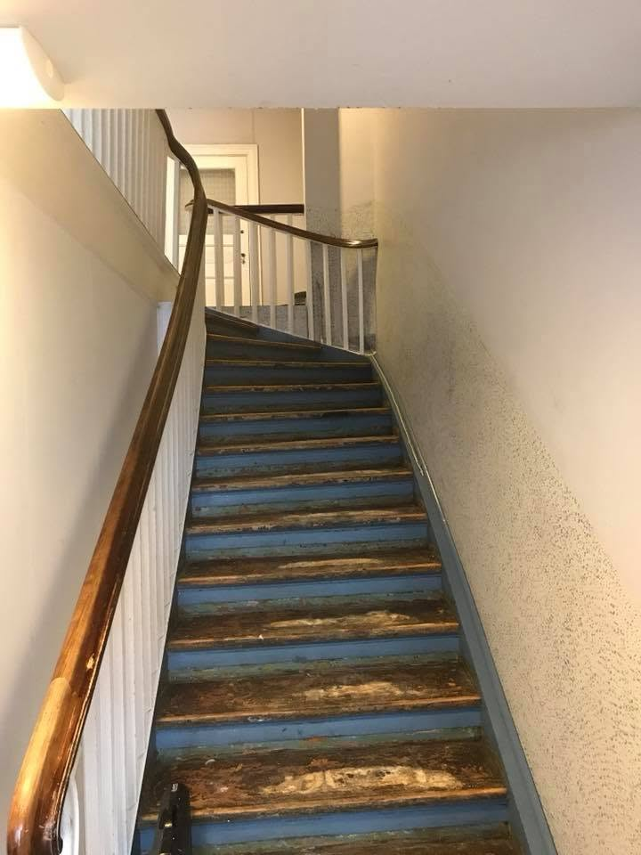
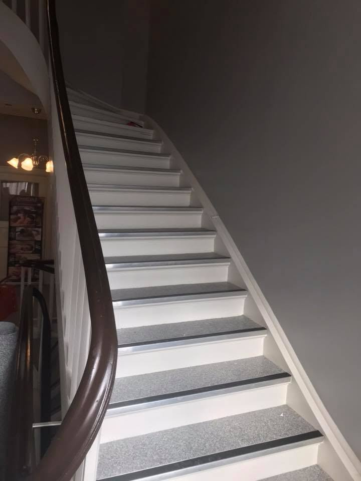
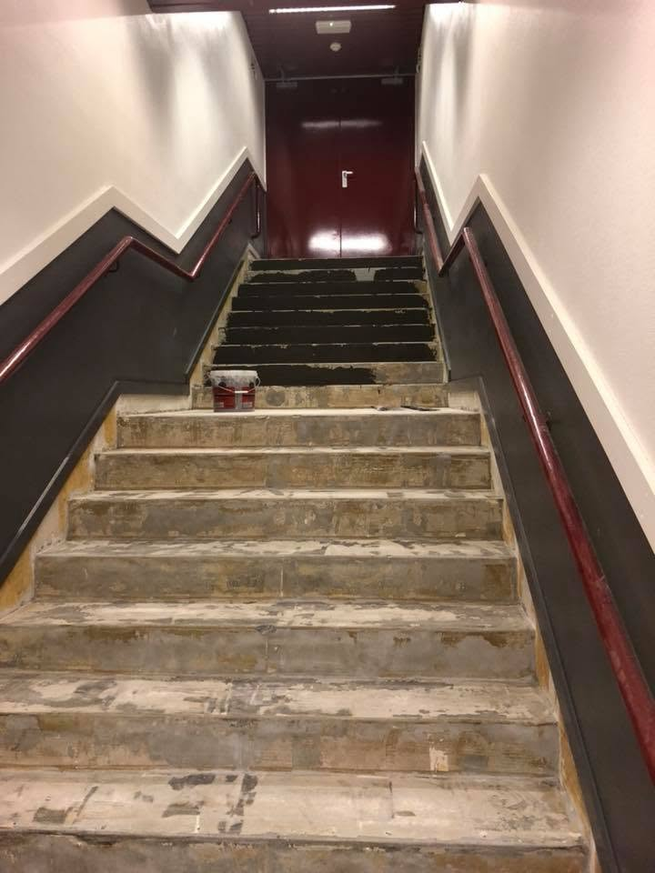
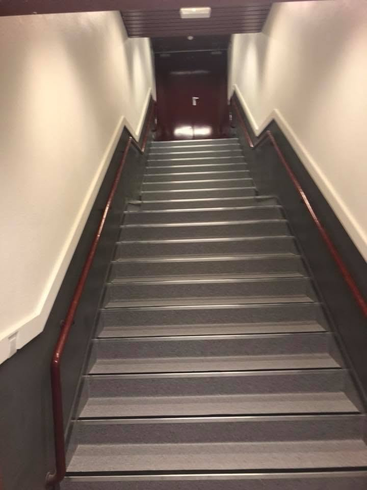
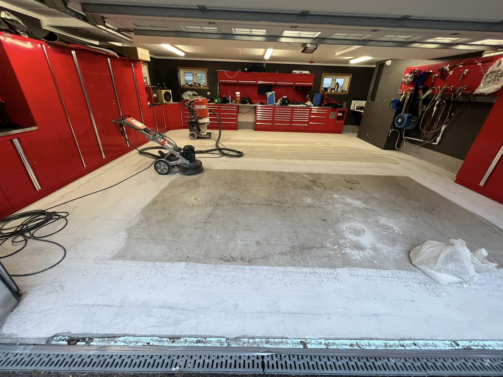
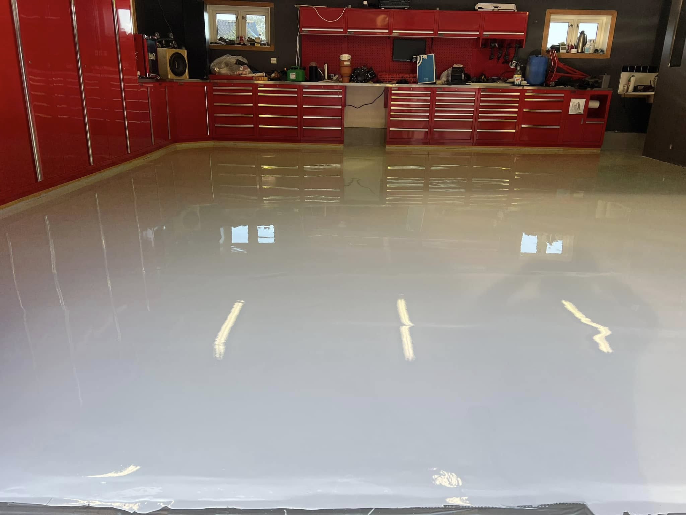
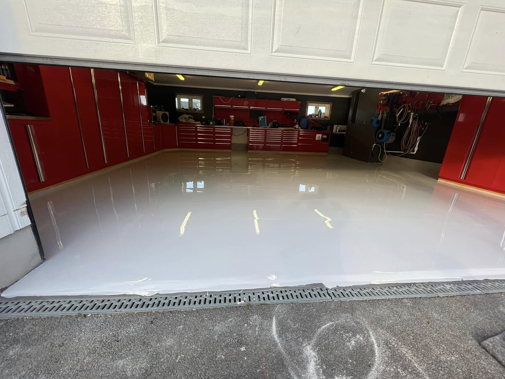
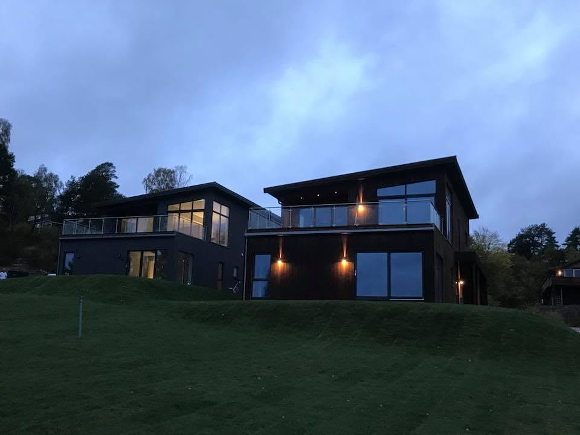

Trapp før behandling
Slitt trapp som ble klargjort for ny overflate og et mer moderne uttrykk.
Referanser og prosjekter
Her viser vi et utvalg av arbeider vi har utført innen maling, trappeoppussing, gulvbehandling, epoxy og fasadearbeid.
Eksempler på trapper før og etter grundig forarbeid, maling og montering av slitesterkt trappebelegg.

Slitt trapp som ble klargjort for ny overflate og et mer moderne uttrykk.

Nymalte trappeflater kombinert med et slitesterkt og sklisikkert belegg.

Underlaget ble rengjort, reparert og klargjort før ny overflate ble montert.

Et ryddig og slitesterkt resultat tilpasset høy bruk og enkel rengjøring.
Et komplett gulvprosjekt med sliping og klargjøring av betongen før påføring av blank og slitesterk epoxy.

Betonggulvet slipes og rengjøres grundig for å sikre best mulig vedheft.

En robust gulvløsning som tåler belastning og samtidig er lett å holde ren.

Den ferdige overflaten gir garasjen et rent, profesjonelt og eksklusivt preg.
Behandling og maling av moderne boligfasader med løsninger tilpasset underlaget og værbelastningen.

Et moderne og helhetlig resultat med god beskyttelse av fasaden.
På Facebook-siden finner du flere bilder fra utførte oppdrag og prosjekter.
Har du et lignende prosjekt?